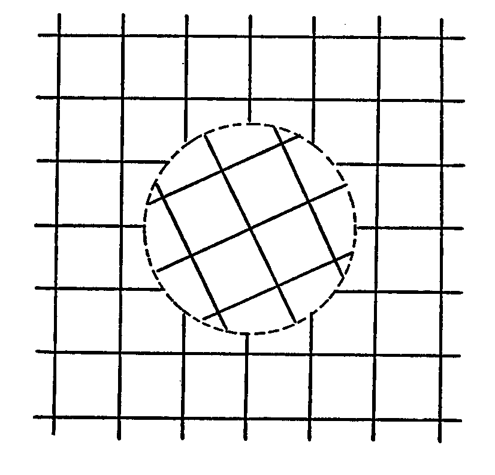

You have in these tutorials been introduced to the idea that matter, typically an electron, is subject to a jitter motion in the inertial frame owing to its orbital component of motion at radius r about a local charge centre in the aether. It can be visualized as attached in some way to a quon and we shall expect its dynamic unbalance to be catered for by a graviton system moving in juxtaposition, but you must accept that that electron does have that 'jitter'. You can, if you wish, imagine the electron replacing a negative quon in that structured underworld we are picturing as 'aether', but then you have to expect that a positive charge e will appear in the aether if that electron escapes. You will not be far then from the scenario suggested by Paul Dirac.
As I stated in the chapter on wave mechanics in 'Physics Unified', it was in 1932 that Dirac delivered his Nobel Prize lecture under the title 'The Theory of Electrons and Positrons' making the statement:
"It is found that an electron, which seems to us to be moving slowly, must actually have a very high frequency oscillatory motion of small amplitude superimposed on the regular motion which appears to us. As a result of this oscillatory motion, the velocity of the electron at any time equals the velocity of light. This is a prediction which cannot be directly verified by experiment, since the frequency is so high and the amplitude so small."
Now I urge you, please, not to rush off to read and believe what Dirac has to say in developing that theme. You will not find answers helpful to your task of deriving that value of G or hc/2(pi)e2 in Dirac's onward writings, because he gets locked into the relativistic way of thinking. However, you may now see from this that the relative motion between the G-frame and the E-frame in the theory I introduced in Tutorial No. 6 and Tutorial No. 7 is that speed c. Furthermore, to use the words of Eddington, quoted from p. 220 of his 1929 book 'The Nature of the Physical World':
"A particle may have position and it may have velocity but it cannot in any exact sense have both."
From this you ought to infer that the position of the electron is uncertain over a range 2r and speed is uncertain over a range c, so that the electron has an uncertainty factor given by the product of uncertainty of momentum and uncertainty of position that is 2mecr. Now, you will find from your physics textbooks that Heisenberg's Principle of Uncertainty tells us that this quantity comprising uncertain components is, in fact, certain in having the value h/2(pi), where h is Planck's constant.
From this we know the value of r in the aether model we have developed in Tutorial No. 6:
However, how do we progress from here to the stage where we can calculate the mass of the quon? This requires us to understand how energy is stored in the aether and, as you might guess, that is simply a process of expanding the radius r of the quon orbit, whilst the synchronism of the universal angular motion is preserved.
We are then dealing with a linear oscillator, a harmonic system subject to a linear restoring force rate, and that means that every unit of energy we store as added potential energy is matched by an equal unit of kinetic energy. So, remembering that angular speed of the aether jitter is constant at c/2r, we find the angular momentum of unit volume of aether is 2do(c/2r)r2, where do is the mass density of the quon system. The factor 2 arises because the graviton system in dynamic balances contributes the same angular momentum as the quon system. The corresponding kinetic energy density is do(c/2)2/2 and, doubling this to get the total kinetic energy density including that of the graviton system, then doubling again by including the electric potential, we find that the energy density stored in the aether by the quon activity is 2do(c/2r)2r2. It follows that the energy of the aether activity is equal to (c/2r) times the angular momentum involved.
This is a fundamental feature of the aether. If one adds an amount of energy to its dynamic system, meaning that the quon orbits expand in radius, then one adds angular momentum and they are related by that fundamental angular frequency of the universal jitter.
Now, take note that a photon is regarded as an energy quantum which has a characteristic frequency and the two are related by Planck's constant of action. Then remember the above formula for r in terms of h, which tells you that c/2r is mec2 divided by h/2(pi). Remember also that the photon has a spin of 1, which is a unit of h/2(pi). This tells you that a photon is essentially something that is characterized by the rest-mass energy of the electron. However, what do we mean when we use Planck's constant to express an energy quantum that we say is a 'photon'? Something in conventional physics does not make sense here in the declaration that a photon is a 'spin-1' particle.
Let us therefore proceed in our own way and imagine that we shed to the aether an energy quantum E that is just a few electron volts and not the 511 keV needed to represent the electron's rest-mass energy. We know that it will generate an angular momentum reaction of E(2r/c) from our above analysis. So we must look for something in the aether that can spin or change its state of spin to set up that reaction. We will call that something the 'photon unit'. My approach here, back in the latter half of the 1950s when I developed this theory, was to say that the photon unit will be the smallest symmetrical structural component of the quon lattice system that can spin freely within the enveloping quon system. I saw that this would be a 3x3x3 cubic array of quons, a group for which N would be 1 in the energy analysis of Tutorial No. 7.
I then worked out the angular momentum change for a change of spin of this unit as a whole. Its moment of inertia I is that of 12 quons distant d from the central spin axis and 12 distant 21/2d, so one can show that the angular momentum Iw for an angular frequency w is 36mod2w. Here mo is the quon mass.

Note that angular momentum Iw corresponds to energy E of Iw(c/2r) but that the rotation of a cube will disturb surrounding aether at a rate four times greater, because a cycle in the pulsation rate is completed for a 90 degree angle of rotation. Therefore the photon radiation frequency f will be 4w/2(pi) and E will then equal (Ic/4r)(pi)f. We have now Planck's radiation law E=hf and can see that h is I(c/4r)(pi). Now substitute 36mod2 for I and look for a way of eliminating mo.
You need not look very far because that restoring force rate of 4(pi)e2/d3 stretched to a distance of 2r gives the force that balances the centrifugal force set up by the quon in its orbital motion at speed c/2. Nor need you worry about any such thing as relativistic mass increase here, because the synchronizing constraints set up by the quon interactions oblige the quons to retain their basic rest-mass. We are not dealing here with a solitary quon which has to store its own added kinetic energy in its mass system. Accordingly, you can write the equation:
From this one sees that (36)(pi)mod2(c/4r) is equal to 288(pi)2e2(r/dc), this being h. This can be then be simplified by writing:
This is the reciprocal of the fine structure constant, usually denoted by the Greek symbol alpha, and our achievement at this point is that we can evaluate it if we know r/d, as we do from our calculations so far, but provided we can be sure that the zero energy potential condition governs the quon state. To explore this we need to take our analysis a little further.
Starting with the equation just deduced we now replace r by its value h/4(pi)mec and we replace mec2 by 2e2/3a, where a is the charge radius of the electron. This takes us to the relationship d/a=108(pi) which we used earlier in Tutorial No. 7. Then we go a little further and write an equation:
We combine the equation just presented and:
At this stage we can progress to determine whether the quons orbit at a larger radius r than needed for the absolute minimum zero energy potential condition. The determining factor here concerns how the quon itself might be affected by the ongoing particle transmutations that feature in the ever-active underworld of the aether. Key to this is the charge volume occupied by the quon charge in relation to that occupied by the electron charge. The charge radii of these two particles have the ratio b/a, where b has the value just given in terms of d and where a is d/108(pi). Therefore, we can compute the charge volume ratio as being the cube of (9/8)(d/r)2.
Now, suppose we declare that this quantity has to be an odd integer, so that we can have transmutations whereby energy injected into the quon can convert it into an electron plus a number of electron-positron pairs. This is just an assumption but I am guided to it by the fact that it is an appealing thought, given that the aether is a charge plenum, to regard the volume of 'space' occupied by charge as being conserved when particles exchange energy in creation processes. I see space, energy and time as the fundamental physical dimensions and, just as energy is conserved, so it may be that 'space' is conserved in a sense, whereas time is universal owing to that synchronizing action between the quons.
So, if you are willing to explore where that takes us, you will see that the requirement for (9/8)(d/r)2 cubed to be an odd integer limits the quon energy potential to correspond to specific values of r/d. The following table lists some values above the zero energy potential state as already computed.
Integer r/d 1843 0.3029159 1841 0.3029707 1839 0.3030256
Now, is it not curious that the integer values which correspond to a quon energy potential very slightly in excess of the minimum zero value, as expressed as a number of electrons and positrons, happens to be so close to the proton/electron mass ratio of approximately 1836?
Remember that the integers in the above table represent the number of electrons and positrons that would take up the space vacated if a quon charge were to convert into an electron.
I leave you to think about that as we move on to see how the minimum aether energy odd integer value in the tabulation would affect the value of hc/2(pi)e2, which, as you will recall is 144(pi)(r/d). Put that value of r/d of 0.3029159 in this expression and you obtain 137.0359. Then take note that r/d would have to be less than 0.302862 to allow that odd integer to be as high as 1845 and compare this with the finding in Tutorial No. 7 that the zero energy aether potential value of r/d is 0.30287465. You will now see why that calculation exercise in Tutorial No. 7 has to be so precise.
Then take note that the measured value of this fundamental physical constant is, in fact, 137.0359895(61), which is rather close to the value just derived by our aether theory! Can you wonder, then, why I find this aether theory gives me assurance that I am on the right track towards understanding what determines the fundamental physical constants?
However, I can surprise you further on the significance of what is presented in the above tabulation and will do that in Tutorial No. 10.
First, we need to progress in our quest to derive the value of G, the constant of gravitation, and this we do by examining the role played by the virtual muons that I mentioned. The logical question confronting us concerning the quon is the question of whether it is a concentrated 'speck' of energy immersed in 'nothing' in energy terms or whether it is a particular form that energy assumes in a background sea of uniform energy density. To understand what I mean by this, take the mass-energy of the quon, divide it by its charge volume and ask what the mass-energy of a cubic cell of side d would be if it had, throughout, the same energy density as the quon.
It is an easy calculation from the analysis already presented. We simply calculate how many electron charge volumes would fill the cubic cell and divide by that number 1843. So we calculate the value of [108(pi)]3 and divide by 4(pi)/3 and then divide again by 1843 to obtain 5059.4923. To convert this into electron rest-mass energy units, we need to divide by the cube root of 1843 to obtain 412.6658.
I will now declare that this energy of 412.6658 electron units is the energy of two virtual muons, those heavy electron forms I mentioned in an earlier tutorial. The muon found in our experiments has a mass betweeen 206 and 207 times that of the electron, though we are not here discussing real muons in their matter form, but rather the muon activity of the aether. In that context the 412.6658 value is exact and not an approximation.
So how can we advance from here to evaluate the mass of the super heavy electron, that of the taon, because that is what we need to determine G? Well, it will take another tutorial, Tutorial No. 9, to show the derivation of the two formulae needed to go from 412.6668 to that taon mass, but we will come to that. Meanwhile, let us use these formulae to work out the value of G.
The first relationship connects the dimuon energy quantum with the proton mass-energy. The applicable equation is:
The second relationship is a little complex because it is a derivative of a sequence of actions involving clusters of triple particle forms which conserve both energy and charge volume in transmutations involving protons and dimuons. The taon mass-energy comes out as the cube root of 3 times a quantity that is itself the fourth root of 3 times the mass-energy of the proton. Calculate this and you obtain 1.898107 times that 1836.152 quantity in electron units or 3485.2 electron units.
Now recall that in Tutorial No. 6 it was shown that the taon has a mass-energy that is slightly greater than 0.6884 times the mass-energy of the standard graviton. From this we can derive that term Mg/me in the equation:
Suffice it to say that here you have a theory for gravity which offers something that Einstein could only dream about. We have not only found the unifying link between electrodynamics and gravitation, but we have shown how Nature determines G and the findings are precise enough to prove our case. Bearing in mind the linking connection with the derivation of the proton/electron mass ratio and the value of the fine structure constant, the case in favour of this theory is overwhelming.
We shall move on to Tutorial No. 9 now to derive those proton-taon formulae used above and then in Tutorial No. 10 we shall come to that rather exciting development concerning the 1843 factor that featured in the above analysis.